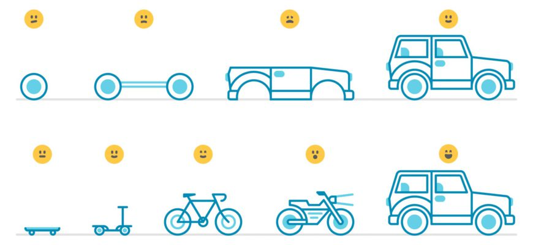

Artefatos
Os artefatos de Scrum são: Product Backlog, Sprint Backlog, Product Increment, Definition of Done e Burndown Charts.

Introdução aos artefatos
O Product Backlog é uma lista ordenada criada pelo Time Scrum, mas onde somente o Product Owner pode
inserir, remover ou reordenar os itens. geralmente itens mais importantes ficam no topo, e serão
implementados antes.
Em geral, os itens de maior importância são os itens que se têm maior
conhecimento, e por isso possuem um detalhamento maior. Itens que precisem de maior refinamento
geralmente têm uma importância menor e ficam mais abaixo no Product Backlog.
SprintBacklog é o conjunto de itens selecionados para serem implementados durante a Sprint mais o
plano para transforma-los em um Incremento.
Normalmente, o plano é composto das tarefas
técnicas
necessárias para transformar o item em um incremento do produto. O objetivo do Sprint Backlog é
tornar visível o trabalho necessário para que a equipe atinja a meta da Sprint.

O DoR é um conjunto de critérios definidos pelo time, que detalha as condições que uma story precisa
atingir/conter para que possa ser trabalhada pelo time.
O benefício do DoR para seu time é ajudá-lo a ter as informações e expectativas relevantes no
momento em que a story será desenvolvida, diminuindo as incertezas e os problemas de comunicação e
entendimento.
Como o próprio nome indica, o Definition Of Done (DoD), estabelece os critérios para que uma tarefa
seja considerada “finalizada” dentro de um modelo de trabalho Scrum.
Uma funcionalidade
somente é
considerada “pronta” se tiver passado por todas as etapas definidas pela equipe para se garantir a
qualidade do que se esteja produzindo durante a Sprint.

Planning poker é uma técnica de planejamento e estimativa baseada em consenso, que é muito útil para
estimar os backlogs de produtos.
O interessante é que essa forma de estimar permite
fornecer resultados com tempos bem mais curtos e com precisão maior, especialmente porque não está
baseada na opinião de um único membro da equipe, mas sim na inteligência coletiva.
Kanban é um método popular de gestão de fluxo de trabalho Lean para definir, gerenciar e melhorar
serviços que fornecem trabalho do conhecimento.
O trabalho é representado em quadros
Kanban, permitindo
otimizar a entrega do trabalho em várias equipes e lidar até mesmo com os projetos mais complexos em
um único ambiente.
O conceito de MVP nasceu no contexto de startups, principalmente de tecnologia. Porém, a linha de raciocínio é aplicável a praticamente todos os projetos. Você pode colocar essa metodologia em prática desde a construção de empresas até relacionamentos. Além disso, pode basear o seu investimento no feedback dos consumidores. A grande dificuldade é saber eliminar aspectos que muitas vezes queremos fazer, mas que ainda não provaram ter funcionalidade e retorno.
Burndown Chart é o gráfico utilizado pelas equipes Scrum para representar diariamente o progresso do trabalho em desenvolvimento. Ele torna visível a evolução diária do trabalho da equipe, pois mostra a comparação entre o trabalho estimado inicialmente com a quantidade restante estimada de trabalho. Normalmente, as unidades utilizadas são de esforço (em horas) planejado pelo tempo decorrido. Além de ajudar o time a se autogerenciar, o Burndown Chart também permite que o restante da organização também possa acompanhar o andamento da Sprint.

O segundo passo é organizar essa lista em prioridades, ou seja, definir as hipóteses em diferentes importâncias e a ordem em que serão validadas. E por fim, validar e testar cada item para assim o grupo decidir se será adicionado ou não ao trabalho.

Com isso o próximo passo é dividir as tarefas entre os integrantes da equipe e definir um tempo estimado para cada tarefa a ser concluída em cada sprint. Dessa forma a equipe evita o acúmulo e atraso de tarefas e consegue organizar o que será feito.
A Sprint Backlog pode sofrer alterações durante o decorrer das sprints, a variação ocorre através da validação e invalidação de tarefas que irão se modelando de acordo com a orientação do trabalho.
O segundo passo ocorre no final de cada sprint, deve se fazer um checklist para verificar se os itens atenderam aos critérios estabelecidos e assim poderem ser considerados "prontos", evitando que trabalhos incompletos ou mau feitos passem para frente.